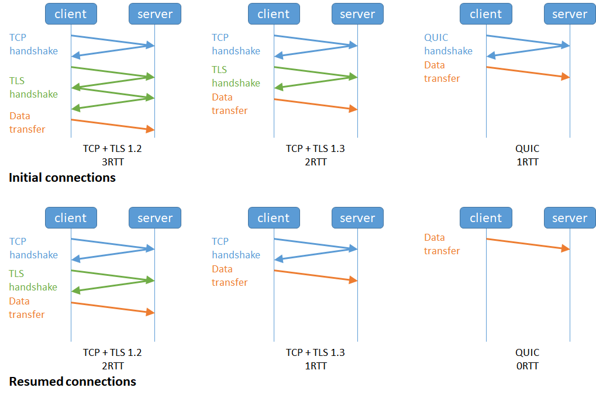

计网八股
1. 计网八股
1.1 基础部分
OSI
- 应用层，负责给应用程序提供统一的接口；
- 表示层，负责把数据转换成兼容另一个系统能识别的格式；
- 会话层，负责建立、管理和终止表示层实体之间的通信会话；
- 传输层，负责端到端的数据传输；
- 网络层，负责数据的路由、转发、分片；
- 数据链路层，负责数据的封帧和差错检测，以及 MAC 寻址；
- 物理层，负责在物理网络中传输数据帧；
TCP/IP
- 应用层，负责向用户提供一组应用程序，比如 HTTP、DNS、FTP 等;
- 传输层，负责端到端的通信，比如 TCP、UDP 等；
- 网络层，负责网络包的封装、分片、路由、转发，比如 IP、ICMP 等；
- 网络接口层，负责网络包在物理网络中的传输，比如网络包的封帧、MAC 寻址、差错检测，以及通过网卡传输网络帧等；
网络包发送过程
先创建
socket，之后把要传输的数据写到这个文件里。调用 socket 的sendto接口的过程中进程会从用户态进入到内核态，最后会调用到sock_sendmsg方法。然后进入传输层带上TCP头，网络层带上IP头，数据链路层带上MAC头等一系列操作后，进入网卡的发送队列 ring buffer ，顺着网卡就发出去了发送网络数据的时候，涉及几次内存拷贝操作？
第一次，调用发送数据的系统调用的时候，内核会申请一个内核态的 sk_buff 内存，将用户待发送的数据拷贝到 sk_buff 内存，并将其加入到发送缓冲区。
第二次，在使用 TCP 传输协议的情况下，从传输层进入网络层的时候，每一个 sk_buff 都会被克隆一个新的副本出来。副本 sk_buff 会被送往网络层，等它发送完的时候就会释放掉，然后原始的 sk_buff 还保留在传输层，目的是为了实现 TCP 的可靠传输，等收到这个数据包的 ACK 时，才会释放原始的 sk_buff。
第三次，当 IP 层发现 sk_buff 大于 MTU 时才需要进行。会再申请额外的 sk_buff，并将原来的 sk_buff 拷贝为多个小的 sk_buff。
在浏览器输入网址后发生了什么
- 解析URL：分析 URL 所需要使用的传输协议和请求的资源路径。
- 缓存判断：浏览器缓存 → 系统缓存（hosts 文件） → 路由器缓存 → ISP 的 DNS 缓存，如果其中某个缓存存在，直接返回服务器的IP地址。
- DNS解析：如果缓存未命中，浏览器向本地 DNS 服务器发起请求，最终可能通过根域名服务器、顶级域名服务器（.com）、权威域名服务器逐级查询，最终获取到服务器IP
- 获取MAC地址：当浏览器得到 IP 地址后，数据传输还需要知道目的主机 MAC 地址，如果在同一个子网里，可以使用 ARP 协议获取到目的主机的 MAC 地址，如果不在一个子网里，那么请求应该转发给网关，由它代为转发，此时同样可以通过 ARP 协议来获取网关的 MAC 地址
- 建立TCP连接：使用目标 IP地址和目标MAC地址三次握手
- HTTPS 的 TLS 四次握手：如果使用的是 HTTPS 协议，在通信前还存在 TLS 的四次握手。
- 发送HTTP请求：连接建立后，浏览器会向服务器发送HTTP请求
- 服务器处理请求并返回响应：服务器收到请求后，会根据请求的内容进行相应的处理
- 最后浏览器收到http响应后进行相应渲染和操作

1.2 http
HTTP 是一个在计算机世界里专门在「两点」之间「传输」文字、图片、音频、视频等「超文本」数据的「约定和规范」。
状态码
1xx类状态码属于提示信息，是协议处理中的一种中间状态，实际用到的比较少。- 「101 Switching Protocols」协议切换，服务器已经理解了客户端的请求，并将通过 Upgrade 消息头通知客户端采用不同的协议来完成这个请求。
2xx服务器成功处理了客户端的请求「200 OK」是最常见的成功状态码，表示一切正常。如果是非
HEAD请求，服务器返回的响应头都会有 body 数据。「204 No Content」也是常见的成功状态码，与 200 OK 基本相同，但响应头没有 body 数据。
「206 Partial Content」是应用于 HTTP 分块下载或断点续传，表示响应返回的 body 数据并不是资源的全部，而是其中的一部分，也是服务器处理成功的状态。
3xx：资源重定向「301 Moved Permanently」表示永久重定向，说明请求的资源已经不存在了，需改用新的 URL 再次访问。
「302 Found」表示临时重定向，说明请求的资源还在，但暂时需要用另一个 URL 来访问。
301 和 302 都会在响应头里使用字段
Location，指明后续要跳转的 URL，浏览器会自动重定向新的 URL。- 「304 Not Modified」不具有跳转的含义，表示资源未修改，重定向已存在的缓冲文件，也称缓存重定向，也就是告诉客户端可以继续使用缓存资源，用于缓存控制。
4xx：客户端发送的报文有误「400 Bad Request」表示客户端请求的报文有错误，但只是个笼统的错误。
「403 Forbidden」表示服务器禁止访问资源，并不是客户端的请求出错。
「404 Not Found」表示请求的资源在服务器上不存在或未找到，所以无法提供给客户端。
5xx：服务器处理时内部发生了错误- 「500 Internal Server Error」是个笼统通用的错误码
- 「501 Not Implemented」表示客户端请求的功能还不支持，类似“即将开业，敬请期待”的意思。
- 「502 Bad Gateway」通常是服务器作为网关或代理时返回的错误码，表示服务器自身工作正常，访问后端服务器发生了错误。
- 「503 Service Unavailable」表示服务器当前很忙，暂时无法响应客户端
常见字段
- Host
- Connection（keep-alive，默认开启）
- Content-Length
- Content-Type
- Content-Encoding
http报文结构
缓存
- 强缓存指的是只要浏览器判断缓存没有过期，则直接使用浏览器的本地缓存，决定是否使用缓存的主动性在于浏览器这边。
- 通过服务端告知客户端是否可以使用缓存的方式被称为协商缓存。
HTTP/1.1
- HTTP/1.1 的优点：简单、灵活和易于扩展、应用广泛和跨平台。
- HTTP 协议里有优缺点一体的双刃剑，分别是无状态、明文传输，同时还有一大缺点不安全。
- HTTP/1.1性能相关：长连接、管道传输（队头阻塞）
HTTPS
- 在 HTTP 与 TCP 层之间加入了
SSL/TLS协议- 信息加密：交互信息无法被窃取
- 校验机制：无法篡改通信内容，篡改了就不能正常显示
- 身份证书：证明淘宝是真的淘宝网
- 在通信建立前采用非对称加密的方式交换「会话秘钥」，后续就不再使用非对称加密。
- 在通信过程中全部使用对称加密的「会话秘钥」的方式加密明文数据。
- 为了保证传输的内容不被篡改，需要对内容计算出一个「指纹」，然后同内容一起传输给对方。
- TLS 四次握手（1.2）
- ClientHello：TLS 协议版本、Client Random、密码套件列表（如RSA）
- SeverHello：确认 TLS 协议版本、Server Random、密码套件列表（如RSA）、服务器的数字证书
- 客户端回应：验证证书拿公钥、pre-master key、加密通信算法改变通知
- 服务器的最后回应：加密通信算法改变通知
- 证书有信任链，先从根证书出发一步步拿公钥验证下一级
- HTTPS本身一定是可靠的，不可靠的原因是用户手动信任了伪造的证书或中病毒被植入了根证书
- 在 HTTP 与 TCP 层之间加入了
性能比较
- HTTP/1.1与1.0相比：长连接、管道
- HTTP/2.0比HTTP/1.1优：头部压缩（1.1只对body压缩）、二进制格式、并发传输（stream）、服务器主动推送资源
- stream：针对不同的 HTTP 请求用独一无二的 Stream ID 来区分，接收端可以通过 Stream ID 有序组装成 HTTP 消息，不同 Stream 的帧是可以乱序发送的，因此可以并发不同的 Stream，也就是 HTTP/2 可以并行交错地发送请求和响应
- HTTP/2队头阻塞：TCP 层必须保证收到的字节数据是完整且连续的，这样内核才会将缓冲区里的数据返回给 HTTP 应用，那么当前 1 个字节数据没有到达时，后收到的字节数据只能存放在内核缓冲区里，只有等到这 1 个字节数据到达时，HTTP/2 应用层才能从内核中拿到数据
- HTTP/3：无队头阻塞（UDP，只会阻塞一个stream）、更快的连接建立（QUIC 内部包含了 TLS1.3）、连接迁移
- 
前向安全性：即使长期密钥在未来被破解或泄露，也不会危及过去的通信内容
Socket与WebSocket
- Socket是操作系统提供的一个抽象层，用于应用程序与网络之间的通信，它允许应用程序通过 TCP 或 UDP 协议进行数据传输。它与WebSocket没有关联
- WebSocket 是一个协议，它提供了一种在单个 TCP 连接上进行全双工通信的机制。与传统的 HTTP 请求不同，WebSocket 允许服务器和客户端之间进行实时、双向的数据交换。
- 浏览器在 TCP 三次握手建立连接之后，都统一使用 HTTP 协议先进行一次通信。如果想要升级成WebSocket协议，可以在header里添加相关字段表示申请升级协议
DNS
- 全称是Domain Name System（域名系统），它是互联网中用于将域名转换为对应IP地址的分布式数据库系统。
- DNS服务器按级别分为根域、顶级域、权威服务器
Cookie、Session、Token
- Cookie的数据存储在客户端（通常是浏览器）。当浏览器向服务器发送请求时，会自动附带Cookie中的数据，服务器可以通过读取这些Cookie来识别用户、管理会话状态以及保持特定的用户状态
- Session的数据存储在服务器端。服务器为每个用户分配一个唯一的Session ID，客户端后续的请求会带上这个Session ID，服务器根据ID查找对应的Session数据。Session ID通常保存在Cookie中，因此禁用Cookie会使Session无法使用
- token类似一个令牌，无状态，用户信息都被加密到token中，服务器收到token后解密就可知道是哪个用户，需要开发者手动添加。
- 由于cookie存储在客户端，因此容易受攻击，不安全，而session中敏感数据存储在服务器端，更加安全
- Cookie可以设置过期时间，过期后自动删除。也可以设置为会话Cookie，即浏览器关闭时自动删除。Session在默认情况下，当用户关闭浏览器时Session结束。但服务器也可以设置Session的超时时间
- SessionStorage是 Web Storage API 的一部分，用于在**同一个会话（session）**中存储数据。
localStorage的数据会被持久化到本地硬盘，sessionStorage的数据只在当前会话中有效。SessionStorage与Session没有直接关联！
JWT令牌（JSON Web Token）
- JWT是无状态的令牌，包含了所有必要的信息，如用户身份、权限，不需要在服务器端存储会话信息。
- JWT使用密钥对令牌进行签名，确保令牌的完整性和真实性。
- JWT能解决集群部署。在传统的基于会话和Cookie的身份验证方式中，会话信息通常存储在服务器的内存或数据库中。但在集群部署中，不同服务器之间没有共享的会话信息，这会导致用户在不同服务器之间切换时需要重新登录或引入额外机制。而JWT令牌通过在令牌中包含所有必要的身份验证和会话信息，使得服务器无需存储会话信息。
- 如果JWT令牌泄露了，可以通过使其失效、加入黑名单的方式解决
为什么有Http了还需要RPC
- RPC 本质上不算是协议，而是一种调用方式。从发展历史来说，HTTP 主要用于 B/S 架构，而 RPC 更多用于 C/S 架构，但是现在不区分了。对外一般用 HTTP 协议，而内部集群的微服务之间则采用 RPC 协议进行通讯。RPC 其实比 HTTP 出现的要早，且比目前主流的 HTTP/1.1 性能要更好，所以大部分公司内部都还在使用 RPC。
nginx
- Nginx是一个 轻量级/高性能的反向代理Web服务器，实现非常高效的反向代理、负载均衡，支持很高的并发
- nginx位于应用层，是七层负载均衡
- nginx负载均衡算法：轮询、IP哈希、URL哈希、最短响应时间、加权轮询
1.3 TCP
- TCP头中需要关注：序列号seq，确认号ack，控制位（SYN、ACK、RST、FIN）
- TCP 是面向连接的、可靠的、基于字节流的传输层通信协议
- TCP 四元组（源地址、源端口、目的地址、目的端口）可以唯一的确定一个连接
- 如果两个 TCP 服务进程同时绑定的 IP 地址和端口都相同，那么执行 bind() 时候就会出错，有一个不同就没事
- 在客户端执行 connect 函数的时候，只要客户端连接的服务器不是同一个，内核允许端口重复使用。只要四元组中其中一个元素发生了变化，那么就表示不同的 TCP 连接
三次握手和四次挥手
TCP和UDP可以用一个端口
三次握手
- TCP 使用三次握手建立连接的最主要原因是防止「历史连接」初始化了连接
- 为什么每次建立 TCP 连接时，初始化的序列号都要求不一样：为了防止历史报文被下一个相同四元组的连接接收（主要），防止黑客伪造的相同序列号的 TCP 报文被对方接收
- 每次超时重传的间隔时间是上一次的 2 倍，到达系统规定的最大次数后关闭连接
- TCP 半连接和全连接队列

- 全连接队列满了之后，会丢弃这个第三次握手ACK包，并且开启定时器，重传第二次握手的SYN+ACK，如果重传超过一定限制次数，还会把对应的半连接队列里的连接给删掉，并回复RST。
- SYN 攻击方式最直接的表现就会把 TCP 半连接队列打满，这样当 TCP 半连接队列满了，后续再在收到 SYN 报文就会丢弃，导致客户端无法和服务端建立连接。
- SYN 攻击解决方法：增大 TCP 半连接队列；开启 tcp_syncookies；减少 SYN+ACK 重传次数
- 四次挥手
- 等待2MSL的原因：相当于至少允许报文丢失一次。比如，若 ACK 在一个 MSL 内丢失，这样被动方重发的 FIN 会在第 2 个 MSL 内到达，TIME_WAIT 状态的连接可以应对。
- 关于close和shutdown：https://blog.csdn.net/qq_41754573/article/details/103440516
- 如果连接是用 shutdown 函数关闭的，连接可以一直处于 FIN_WAIT2 状态，因为它可能还可以发送或接收数据。但对于 close 函数关闭的孤儿连接，由于无法再发送和接收数据，所以这个状态不可以持续太久，而 tcp_fin_timeout 控制了这个状态下连接的持续时长默认为60s
- 当被动关闭方在 TCP 挥手过程中，没有数据要发送并且开启了 TCP 延迟确认机制，第二和第三次挥手就会合并传输，这样就出现了三次挥手
TCP的一些机制
保活，socket各种函数，快速重传、流量控制，拥塞控制，FAST OPEN，close和shutdown，TCP延迟确认机制
- TCP保活机制：定义一个时间段（一般是2小时），在这个时间段内，如果没有任何连接相关的活动，TCP 保活机制会开始作用，每隔一个时间间隔，发送一个探测报文，该探测报文包含的数据非常少，如果连续几个探测报文都没有得到响应，则认为当前的 TCP 连接已经死亡，系统内核将错误信息通知给上层应用程序。
- 快速重传：当收到三个相同的 ACK 报文时，会在定时器过期之前，重传丢失的报文段。
- SACK：在 TCP 头部「选项」字段里加一个
SACK的东西，它可以将已收到的数据的信息发送给发送方，这样发送方就可以知道哪些数据收到了，哪些数据没收到，知道了这些信息，就可以只重传丢失的数据。 - Duplicate SACK：又称
D-SACK，其主要使用了 SACK 来告诉发送方有哪些数据被重复接收了。 - 窗口：窗口大小就是指无需等待确认应答，而可以继续发送数据的最大值。
- 拥塞控制
- 发生了超时重传，就会认为网络出现了拥塞
- 拥塞控制算法：
- 慢启动（慢启动门限
ssthresh）：当发送方每收到一个 ACK，拥塞窗口 cwnd 的大小就会加 1 - 拥塞避免：每当收到一个 ACK 时，cwnd 增加 1/cwnd
- 拥塞发生：超时重传（ssthresh’ = cwnd/2, cwnd’ = 1）、快速重传（cwnd’ = cwnd/2, ssthresh’ = cwnd’, 进入快速恢复）
- 快速恢复：cwnd’ = ssthresh’ + 3
- 慢启动（慢启动门限
- Fast Open：第一次请求结束时时缓存 Fast Open 选项中的 Cookie，以后再请求带上Cookie只需要两次握手
- close和shutdown
- close() 函数会立即关闭套接字的所有功能，而 shutdown() 函数可以选择关闭读、写或读写功能
- close 函数同时关闭 socket 发送方向和读取方向，也就是 socket 不再有发送和接收数据的能力。如果有多进程/多线程共享同一个 socket，如果有一个进程调用了 close 关闭只是让 socket 引用计数 -1，并不会导致 socket 不可用，同时也不会发出 FIN 报文，其他进程还是可以正常读写该 socket，直到引用计数变为 0，才会发出 FIN 报文。
- shutdown 函数可以指定 socket 只关闭发送方向而不关闭读取方向，也就是 socket 不再有发送数据的能力，但是还是具有接收数据的能力。如果有多进程/多线程共享同一个 socket，shutdown 则不管引用计数，直接使得该 socket 不可用，然后发出 FIN 报文，如果有别的进程企图使用该 socket，将会受到影响
- TCP 延迟确认机制
- 当有响应数据要发送时，ACK 会随着响应数据一起立刻发送给对方
- 当没有响应数据要发送时，ACK 将会延迟一段时间，以等待是否有响应数据可以一起发送
- 如果在延迟等待发送 ACK 期间，对方的第二个数据报文又到达了，这时就会立刻发送 ACK
QUIC
- QUIC 使用Packet Number 单调递增的设计，并且即便是重传以前的报文这个序号也会增大，可以让数据包不再像 TCP 那样必须有序确认，QUIC 支持乱序确认，当数据包Packet N 丢失后，只要有新的已接收数据包确认，当前窗口就会继续向右滑动
- QUIC帧控制信息
- Stream ID：多个并发传输的 HTTP 消息，通过不同的 Stream ID 加以区别，类似于 HTTP2 的 Stream ID
- Offset：类似于 TCP 协议中的 Seq 序号，保证数据的顺序性和可靠性
- Length：指明了 Frame 数据的长度
- QUIC 通过单向递增的 Packet Number，配合 Stream ID 与 Offset 字段信息，可以支持乱序确认而不影响数据包的正确组装
- QUIC 给每一个 Stream 都分配了一个独立的滑动窗口，这样使得一个连接上的多个 Stream 之间没有依赖关系，都是相互独立的，各自控制的滑动窗口
- QUIC 实现流量控制的方式
- 通过 window_update 帧告诉对端自己可以接收的字节数，这样发送方就不会发送超过这个数量的数据
- 通过 BlockFrame 告诉对端由于流量控制被阻塞了，无法发送数据
- Stream 级别的流量控制：Stream 可以认为就是一条 HTTP 请求，每个 Stream 都有独立的滑动窗口，所以每个 Stream 都可以做流量控制，防止单个 Stream 消耗连接（Connection）的全部接收缓冲
- Connection 流量控制：限制连接中所有 Stream 相加起来的总字节数，防止发送方超过连接的缓冲容量
- QUIC 是处于应用层的，应用程序层面就能实现不同的拥塞控制算法，不需要操作系统，不需要内核支持。这是一个飞跃，因为传统的 TCP 拥塞控制，必须要端到端的网络协议栈支持，才能实现控制效果。而内核和操作系统的部署成本非常高，升级周期很长，所以 TCP 拥塞控制算法迭代速度是很慢的。
- QUIC 内部包含了 TLS，它在自己的帧会携带 TLS 里的“记录”，再加上 QUIC 使用的是 TLS1.3，因此仅需 1 个 RTT 就可以「同时」完成建立连接与密钥协商，甚至在第二次连接的时候，应用数据包可以和 QUIC 握手信息（连接信息 + TLS 信息）一起发送，达到 0-RTT 的效果
- QUIC 协议没有用四元组的方式来“绑定”连接，而是通过连接 ID来标记通信的两个端点，与TCP使用四元组区别开来
杂项
- TCP 粘包问题：两个消息的某个部分内容被分到同一个 TCP 报文。这时接收方不知道消息的边界的话，是无法读出有效的消息。解决：固定长度的消息、特殊字符边界、自定义消息结构
- SYN 报文被丢弃的两种场景：
- 开启 tcp_tw_recycle 参数，并且在 NAT 环境下，如果后来的连接请求时间戳比之前关闭的小就会被丢弃，造成 SYN 报文被丢弃
- TCP 两个队列满了（半连接队列和全连接队列），造成 SYN 报文被丢弃
- 处于 Established 状态的服务端，如果收到了客户端的 SYN 报文（注意此时的 SYN 报文其实是乱序的，因为 SYN 报文的初始化序列号其实是一个随机数），会回复一个携带了正确序列号和确认号的 ACK 报文，这个 ACK 被称之为 Challenge ACK。客户端收到这个 Challenge ACK，发现确认号（ack num）并不是自己期望收到的，于是就会回 RST 报文，服务端会释放连接。
- 在 TCP 正常挥手过程中，处于 TIME_WAIT 状态的连接，收到相同四元组的 SYN 后会发生什么？
- 合法：客户端的 SYN 的序列号比服务端期望下一个收到的序列号要大，此时会重用此四元组连接
- 非法：客户端的 SYN 的序列号比服务端期望下一个收到的序列号要小，此时回RST
- 如果客户端进程崩溃，客户端的进程在发生崩溃的时候，内核会发送 FIN 报文，与服务端进行四次挥手。但是如果客户端宕机（例如断电），那么是不会发生四次挥手的，下面要看服务端发送报文或者触发保活机制。
- 服务端如果只 bind 了 IP 地址和端口，而没有调用 listen 的话，然后客户端对服务端发起了连接建立，服务端会回 RST 报文
- 就算不执行accept()方法，三次握手照常进行，并顺利建立连接。甚至在服务端执行accept()前，如果客户端发送消息给服务端，服务端是能够正常回复ack确认包的。
- 如果进程退出了，不管是不是正常退出，还是异常退出（如进程崩溃），内核都会发送 FIN 报文，与对方完成四次挥手，不一定得调用关闭连接的函数
- 当被动关闭方在 TCP 挥手过程中，如果「没有数据要发送」，同时「没有开启 TCP_QUICKACK（默认情况就是没有开启，没有开启 TCP_QUICKACK，等于就是在使用 TCP 延迟确认机制）」，那么第二和第三次挥手就会合并传输，这样就出现了三次挥手。
- 服务端主动断开连接的情况：HTTP 没有使用长连接、HTTP长连接超时、HTTP长连接请求数量达到上限
- TCP 序列号和确认号的变化
- 公式一：序列号 = 上一次发送的序列号 + len（数据长度）。特殊情况，如果上一次发送的报文是 SYN 报文或者 FIN 报文，则改为 上一次发送的序列号 + 1。
- 公式二：确认号 = 上一次收到的报文中的序列号 + len（数据长度）。特殊情况，如果收到的是 SYN 报文或者 FIN 报文，则改为上一次收到的报文中的序列号 + 1。
1.4 IP
- - 主机号全为 1 指定某个网络下的所有主机，用于广播 - 主机号全为 0 指定某个网络
- 多播使用的 D 类地址，其前四位是
1110就表示是多播地址，而剩下的 28 位是多播的组编号 - 无分类地址CIDR：a.b.c.d/x，
/x表示前 x 位属于网络号 - - 可以通过子网掩码划分出网络号和主机号。上子网掩码还有一个作用，那就是**划分子网**。
- 环回地址是在同一台计算机上的程序之间进行网络通信时所使用的一个默认地址。计算机使用一个特殊的 IP 地址 127.0.0.1 作为环回地址。与该地址具有相同意义的是一个叫做
localhost的主机名。 - IPv6 地址长度是 128 位，是以每 16 位作为一组，每组用冒号 「:」 隔开。如果出现连续的 0 时还可以将这些 0 省略，并用两个冒号 「::」隔开。一个 IP 地址中只允许出现一次两个连续的冒号。
- IP 协议相关技术
- DNS 域名解析：TCP和UDP均可，一般默认UDP
- ARP 与 RARP 协议
- DHCP 动态获取 IP 地址：基于UDP
- NAT 网络地址转换：网络地址与端口转换 NAPT
- ICMP 互联网控制报文协议

- ping使用查询类型报文

- IGMP 因特网组管理协议
- 关于回环地址
127.0.0.1是回环地址。localhost是域名，但默认等于127.0.0.1（可修改）- 到了网络层，系统会根据目的IP，在路由表中获取对应的路由信息，而这其中就包含选择哪个网卡把消息发出。当发现目标IP是外网IP时，会从”真网卡”发出。当发现目标IP是回环地址时，就会选择本地网卡。
ping回环地址和ping本机地址，是一样的，走的是lo0 “假网卡”，都会经过网络层和数据链路层等逻辑，最后在快要出网卡前狠狠拐了个弯，将数据插入到一个链表后就软中断通知 ksoftirqd 来进行收数据的逻辑，压根就不出网络。- 0.0.0.0在ipv4中是无效目的地址，但如果服务器
listen的是0.0.0.0，则表示本机上的所有IPV4地址，那么此时用127.0.0.1和本机地址都可以访问到服务